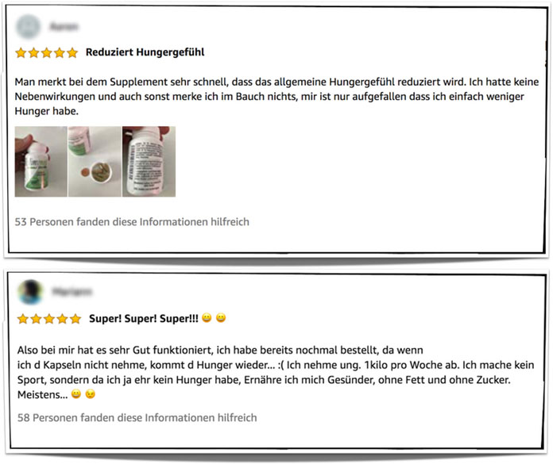
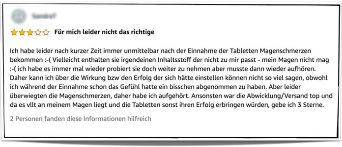

Eine schlanke Figur – das wünschen sich viele Menschen. Deshalb boomt der Markt für Diätpillen. Doch halten längst nicht alle was sie versprechen.
Dieses mal haben wir uns das Präparat Slimymed einmal genauer angesehen.
Welche Inhaltsstoffe sind in den Kapseln? Was sagen Experten dazu? Gibt es Erfahrungsberichte von Anwendern? Ist das Präparat wirklich so gut? Alle Informationen jetzt in unserem Produktcheck.
Die genauen Wirkversprechen des Herstellers bei korrekter Einnahme der Kapseln sind:
- Abnahme von Körpergewicht
- Verringerung von Hungergefühl
- Elliminierung von Heißhunger
- Reduzierung von Fettdepots
- Steigerung der Fettverbrennung
- Aktivierung des Stoffwechselns
- Umwandlung von Kohlenhydraten in Energie
Wir ermitteln die Inhaltsstoffe und nehmen deren Wirkungsweise detailliert in den Fokus.
Schritt 2 - Inhaltstoffe
Wir sagen Ihnen, ob Sie bei der Anwendung mit Nebenwirkungen rechnen müssen.
Schritt 3 - Inhaltstoffe
Wir hören uns zusätzlich die Meinung eines ausgewiesenen Experten an.
Schritt 4 - Inhaltstoffe
Wir fassen Bewertungen zusammen und schauen ob sie unsere Erkenntnisse untermauern können.
Die Inhaltsstoffe in Slimymed sind:
- Mangostan-Extrakt
- indischer Ballonblume-Extrakt
- Mikrokristalleine Cellulose
- Reisstärke
Jedoch kann es bei unsachgemäßer Anwendung auch bei natürlichen Inhaltsstoffen zu Nebenwirkungen und unerwünschten Begleiterscheinungen kommen. Gerade dann wenn der Anwender gegen eine oder mehrere der Substanzen eine Überempfindlichkeit zeigt.
In meiner Tätigkeit als Ernährungsexperte habe ich immer wieder Kontakt zu Menschen, die sich schwer tun ihr Normalgewicht zu halten beziehungsweise unter starkem Übergewicht leiden. Hauptproblem ist oftmals, dass sie es nicht schaffen ihr Hungergefühl zu kontrollieren.
Neben weiteren Maßnahmen empfehle ich dann gerne Slimymed oder andere natürliche Diätmittel. Denn diese regen den Stoffwechsel zusätzlich immens an und reduzieren Fettdepots. Dadurch können überschüssige Pfunde purzeln.
Gerade Slimymed sticht hier hervor, da die Inhaltsstoffe neben ihren gewichtsreduzierenden Eigenschaften besonders gut verträglich sind. Bisher hat noch keiner meiner Kunden bei Slimymed über Nebenwirkungen geklagt.
Matthias S., Ernährungsexperte
So können wir in den Bewertungen nachlesen, dass die Verbraucher von der unkomplizierten Bestellung und schnellen Lieferung begeistert sind. Die Einnahme der Diätpillen sei sehr einfach, denn man könne sie leicht mit Wasser schlucken.
Schon nach wenigen Tagen bemerken die Anwender in der Regel eine Wirkung und das Hungergefühl lässt nach. Zusätzlich würden auch die gefährlichen Heißhungerattacken verschwinden.
Einige Anwender berichten, dass sie die besten Ergebnisse erzielt hätten, da sie neben der Einnahme der Kapseln auch Sport getrieben hätten. Dadurch hätten sie in relativ kurzer Zeit und mit vergleichsweise wenig Aufwand viel Gewicht verloren.
 Im Netz können wir auch einige wenige negative Rezensionen entdecken. Dort berichten Kunden, von leichten Nebenwirkungen wie Bauchschmerzen und leichter Übelkeit. Wie gesagt können solche Reaktionen selbst bei pflanzlichen Mitteln nicht ganz ausgeschlossen werden, sind oftmals aber auch auf falsche Einnahme zurückzuführen.

Sinnvoll wäre es, morgens und abends jeweils eine beziehungsweise zwei Kapseln mit ausreichend Wasser einzunehmen.
Um die gewünschten Effekte zu erreichen, wird empfohlen die Appetitzügler über einen Zeitraum von mindestens vier Wochen anzuwenden.
Von mehr als vier Nahrungsergänzungskapseln pro Tag wird dringend abgeraten.
Beim Partnerseiten oder Online Händler wie Amazon und Bay ist es möglich, dass Sie Fälschungen erhalten, weil diese Geschäfte die Inhaltsstoffe nicht überprüfen. Dies könnte zu einer verringerten Effizienz des Produkts führen.
Folgende Kaufoptionen bestehen dabei für Sie:
- 1 Dose kostet 49,90 Euro (statt 69,90 Euro).
- 2 Dosen und 1 Dose gratis dazu kosten 99,90 Euro (statt 209,90 Euro).
- 3 Dosen und 3 Dosen gratis dazu kosten 149,90 Euro (statt 419, 90 Euro).
Wird Slimymed in Deutschland hergestellt?
Ja, das Diätmittel ist „Made in Germany“.
Ist Slimymed vegan?
Ja, das Nahrungsergänzungsmittel ist auch für Veganer geeignet. Die Kapselhülle ist nicht wie üblich aus tierischer Gelantine hergestellt, sondern aus pflanzlicher Hydroxypropylmethylcellulose.
Welche Bezahlmöglichkeit habe ich?
Auf der Homepage des Herstellers haben Verbraucher die folgende Zahlungsmöglichkeiten:
- Paypal
- Klarna (per Ratenzahlung oder auf Rechnung)
- Visa
- Mastercard
- Maestro
- Sofortüberweisung
Ja, Slimymed hat folgende PZN: 15259086.
War Slimymed bereits bei “Die Höhle der Löwen”?
Bis zum Zeitpunkt unserer Nachforschungen wurde Slimymed noch nicht in der VOX-Fernsehsendung „Die Höhle der Löwen“ vorgestellt.
Apotheke Blog: Slimymed Test: Einfach Abnehmen ohne Sport | Apotheke.BLOG; auf: www.apotheke.blog (abgerufen am: 08.02.20)
Wikipedia: Ballonblume – Wikipedia; auf: de.wikipedia.org (abgerufen am: 08.02.20)
Mangostin: Mangostin - Wirkungen und Anwendung des Immunboosters; auf: www.mangostin.info (abgerufen am: 08.02.20)